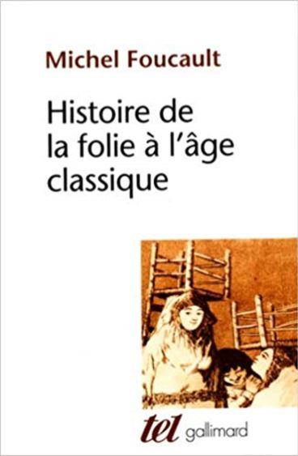
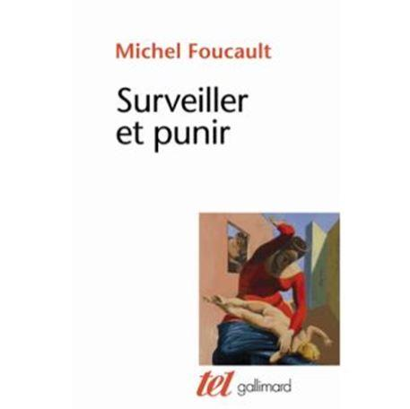

Michel Foucault : de la mort de l’homme à la société de la surveillance
par Henri FENG
(Paul-)Michel Foucault (1926-1984) suscite tant de controverses. PMF était un acronyme si détesté pour lui : le même que celui de Pierre Mendès-France1. L’ordre judéo-chrétien n’était pas son monde. Dès lors, Foucault avait besoin de faire la peau à Paul-Michel. En l’occurrence, lire et relire Foucault, c’est penser avec et contre notre temps. Toute la droite le congédie : de la droite libérale2 à la droite nationale3. En outre, on le condamne vigoureusement en raison de son homosexualité, celle-ci récupérée vilement, après coup, par Lesbian Gay Bisexual and Transgender. L’homme devait, à jamais être confondu avec son œuvre. De la tolérance naturelle à l’endroit de l’homosexualité à la critique de l’homosexualisme, les étapes sont brûlées et les cartes plus que brouillées. Ceci donne finalement quitus à Foucault pour qui la rationalité peut avoir ses accès de folie.
En outre, on lance à Foucault les mêmes charges qu’à Kant à son époque, et ce pour le meilleur et pour le pire. Car la raison ne serait jamais déraisonnable. Pourtant, la rationalisation – ou même encore la systématisation – des Lumières a mené logiquement à son exact contraire : la déconstruction4. Une dialectique impossible. Mais une dialectique quand même. Seulement, un phénomène intellectuel trop subtil laisse présager des interprétations simplistes, voire superficielles. Beaucoup n’ont pas voulu voir que Foucault était resté un dialecticien, et ainsi un philosophe à part entière. Comme Platon, il était tiraillé entre le dialogue sempiternel du Même avec le Même et celui du Même avec l’Autre.
Tiraillé entre l’amitié et l’amour : le vide philosophique par excellence. Entre métaphysique et métasexualité (métapsychologie), la dialectique virevolte à jamais entre homosexualité et hétérosexualité. Car l’entre-deux ne peut pas connaître de réconciliation. Dès lors, la question de l’identité devait être nécessairement accolée à celle des origines. Et de cet accolement nait la problématique ultime de tous les temps, problématique qui se résume par l’interrogation suivante : « qu’est-ce que la civilisation ? », et ce pour ne pas redire directement, après Kant, « qu’est-ce que l’homme ? »5.
1) L’ANÉANTISSEMENT DU SUJET, OU LA MORT DE L’HOMME :
L’unité psychologique pose inlassablement problème. La haine de la chair n’est jamais étrangère à l’affaire. « Si quelque chose m’échappe, c’est irrémédiablement en raison de ce corps soumis à l’instinct », se dit constamment le cœur angoissé à l’ère féodale. L’homme est ainsi fait : il est prompt à vouloir en finir avec lui-même. Après la publication de son essai intitulé Les mots et les choses en 19666, Foucault entend manifester les causes profondes de la mort de l’homme. Une généalogie de l’homme doit nécessairement mener vers des phénomènes concrets aisément repérables dans l’Histoire.
C’est dans cette perspective qu’Histoire de la folie à l’âge classique voit le jour (en 1972). La folie, en tant qu’Autre de la raison, interroge l’unité de l’intelligence humaine comme l’unicité de la personnalité. La folie, en tant que psyché originelle, met à mal l’identité. Elle altère l’âme, voire la détruit. Ce que l’on appelle démence au Moyen-âge est angoisse aujourd’hui : le mal-être qui dit indéfiniment « peut-être ». Dans l’accès de folie, le sujet, pourtant initialement conscient et connaissant, n’est plus lui-même7 : il n’est plus le metteur en scène de lui-même. Le fou n’est plus fondamentalement narcissique puisqu’il désespère de lui-même. Ainsi, Foucault explore la part la plus sombre de la nature humaine. Il fait le tour, non sans détours, de ce que Zola appelle La bête humaine8.
Est fou celui dont le corps bouffe, sans limite, l’âme. Au Moyen-âge, le fou est proscrit car il ne répond pas aux critères théologiques9. A la Renaissance, la folie s’identifie à la passion amoureuse. Dans une époque où le mariage reste conforme aux rapports de classes, il apparait comme funeste, voire stupide, de se rendre malade, voire coupable, de ne pas avoir ce qu’on ne mérite pas. Même les rois n’ont pas le droit d’en faire un fromage. Et, à l’âge classique, le fou est nécessairement déraisonnée, voire déraisonnable. Il est un insensé. Le bon sens est son originelle absence10. Dès lors, le cogito cartésien écarte spontanément l’aliéné identifié au passionné11. Par conséquent, l’exalté doit être condamné12.
Seule la maitrise de soi permet d’être le roi du monde13. En vérité, ce qui est hasardeux est la chose en soi. L’irrationnel devrait avoir du sens, et pour le réel et pour le rationnel. Pour Foucault, l’extériorité politique et l’intériorisation psychologique fécondent ensemble la folie14. En d’autres termes, le conditionnement crée le conditionné. En bon marxiste tragique, Foucault pense que tout est matérialisme dialectique. Les rapports de force socio-économiques déterminent la qualité des beaux-arts ainsi que celle des systèmes philosophiques et des liturgies. La quantité dicte ainsi, dans l’Histoire, sa loi à la qualité. En somme, seul le champ matériel donne forme à la folie. Par extension, les sociétés bourgeoises du XVIIIème siècle provoquent nécessairement une autre sorte de folie. De fait, à chaque époque et à chaque continent correspond une conception intrinsèque de la démence. La démarche foucaldienne, ici, n’est pas tant psychologique qu’anthropologique. Cette démarche aboutit à la conclusion selon laquelle la folie constitue fondamentalement la mauvaise conscience des sociétés occidentales : elle dit ce qu’est l’époque, mais toujours singulièrement. Or c’est précisément la singularité qui obsède notre philosophe français. Quoi qu’il en soit, le statut civil du fou devrait être posé en profondeur. Celui-ci est bel et bien dans le hors-champ de la structure sociale. Plus honni que l’idiot du village. Car il est, de fait, inutile et incertain.
2) LA BALLE AU PRISONNIER :
Conformément à sa généalogie de l’homme, Foucault entend en saisir un nouvel élément accidentel, ou essentiel autrement : le prisonnier. Dans Surveiller et punir, l’homme n’apparait pas tant comme le prisonnier que le prisonnier comme l’homme. L’antihumaniste Foucault ne deviendrait-il pas, alors, humaniste ? Le paradoxe demeure, sans doute, la matrice de la pensée foucaldienne. Et encore une fois, le marginal est conçu comme étant fondamental. Au même titre que l’aliéné, le prisonnier est le signifiant de la société bourgeoise dont la spécialité est de savoir dissimuler son signifié.
Pour que la démonstration soit complète, Foucault pose trois temps : celui du châtiment, celui de l’enfermement et celui du jugement. Plus que le statut social de l’homme, c’est d’abord le statut culturel du corps qui préoccupe le structuraliste français. Voilà pourquoi, tant pour des raisons chronologiques que pour des raisons simplement logiques, il entreprend, en premier lieu, une histoire du supplice.
L’ordre théologico-politique que fut le Moyen-âge imposa la haine du corps. Le problème est que Foucault réduit son entreprise au champ européen, et particulièrement au champ français. Toute la partie consacrée au châtiment apparait clairement comme un supplément, à contretemps, de la Deuxième dissertation de La généalogie de la morale : La « faute », la « mauvaise conscience » et ce qui leur ressemble15. Foucault laisse entendre que la civilisation est sadique ou n’est pas. Alors, l’interrogation nietzschéenne suivante résonne comme un écho tout au long de l’analyse foucaldienne : « Comment faire souffrir peut-il être une satisfaction ? »16 De toute évidence, la dialectique consubstantielle à la civilisation doit, dans cette perspective, être déconstruite entre l’analyse de la faute et celle de la punition. Nietzsche, Foucault, même combat !17 Assurément, plus que Nietzsche encore, Foucault confond à souhait société et société occidentale. Car un tel sadisme pourrait-il être concevable dans le monde extrême-oriental ? La question est évacuée pour donner la part belle à la victimisation à outrance du châtié18. En fin d’analyse, aucune souffrance ne devrait être méritée. Le sadisme de la société est crûment critiqué, mais la tendance humaine (trop humaine) en faveur du masochisme est coupablement ignorée19. L’Église catholique se réduit subitement à une vaste opération de châtiment corporel.
Le corps doit rester, de toute façon, mutilé, et ce toujours autrement : il est capturé, manipulé, nourri et déstructuré20. En effet, l’État démocratique a remplacé l’Église : il juge, punit et absout quand il le souhaite. Comme au temps des supplices, le corps ne s’appartient plus à lui-même. Il n’est doué que pour une seule chose : demeurer passif. Le statut du patient en médecine (Foucault est issu d’une lignée de médecins) n’est, donc, pas sans lien avec celui du prisonnier. Le paria, dans un système bourgeois, n’est libre ni avant ni après son larcin : il est éliminé quoi qu’il arrive. Pour Foucault, le prisonnier est une victime expiatoire a priori de la société. Toujours est-il que la première partie de Surveiller et punir était anthropologique, le deuxième éhontément politique. Le nietzschéisme n’a plus qu’à bien se tenir : le délinquant est sublimé conceptuellement puisqu’il est condamné à demeurer retiré de la norme de l’humanité, et ce au même titre que le fou à lier. Il est, bel et bien, le surhomme face à l’homme. Foucault conçoit, ainsi, la société démocratique non au niveau de son centre, mais au niveau de sa périphérie. Non par son essence, mais par ses accidents. Le pire est que Foucault n’a pas tort de défendre cette vision des choses : on connait mieux Osaka (sans doute la ville la plus criminogène du Japon) en observant les ruelles d’Umeda (ou de Juso, ou bien encore, de Tobita shinchi), mieux New York en immersion dans le Bronx (ou à Harlem), ou mieux Paris en s’infiltrant dans Pigalle (ou Barbès). Manifestement, Foucault ne sait pas entrer dans un monde autrement que par la porte de sortie, ou par la fenêtre. Une authentique philosophie de la prise à revers.
Il est évident, à présent, que Foucault a préféré traiter le punir avant le surveiller. C’est, néanmoins, au cœur de son analyse critique de l’enfermement qu’il saisit tous les points du principe panoptique21.
Le structuraliste français doit, alors, reprendre à son compte les assertions de Jeremy Bentham (1748-1832), le fondateur de l’utilitarisme. Le panoptique signifie le « voir partout » (panoptès signifiant en grec ancien « celui qui voit tout »), autrement dit l’omniscience : un œil qui sait tout ce qui se passe. Dieu était, pourtant, mort depuis l’avènement des Lumières. Comme dans un effet miroir, la prison réincarnerait les trois éléments consubstantiels à l’entité divine telle que celle-ci était conçue par le monothéisme depuis ses origines : l’omniscience, l’omnipotence et l’omniprésence.
Le rationalisme cartésien lui-même ne pouvait se soustraire à cette définition du dieu unique : il sait tout, peut tout et est partout22. Alors la prison, dans une structure panoptique, révèlerait la véritable essence de l’État. Le XIXème siècle ne serait-il pas d’abord celui de l’Étatisme ? L’État avait, à l’évidence, remplacé Dieu dans l’inconscient collectif. Foucault redevient, ainsi, subitement humaniste : le thème de la mort de l’homme rentre en pleine contradiction avec la condamnation de l’Étatisme. Comme Bentham, il souscrit autant au libéral-libertarisme qu’à son alter ego, l’individualisme. Le libéral-libertarisme ne fait rapidement plus qu’un avec l’anarcho-libertarisme : « il est interdit d’interdire »23. Conséquence : le panoptique définit, par extension, et ce qu’est la prison et ce qu’est la société.
Quoi qu’il en soit, Foucault est persuadé, bec et ongles, que le panoptique est une mise en scène en soi. Sa conclusion est définitive : « Notre société n’est pas celle du spectacle, mais de la surveillance »24. Les sciences humaines, qui avaient fait de l’homme le centre de toutes les attentions, se retrouvent face à un nouvel objet : une espèce, voire une sous-espèce du citoyen moderne, en l’occurrence le délinquant. De plus, ce dernier est assujetti à une structure à la fois administrative et mécanique d’une grande particularité : la technique pénitentiaire25. Un nouveau champ est créé, une discipline scientifique doit lui être rattachée : la criminologie, cette dernière se définissant autant comme la psychologie du délinquant que comme l’analyse du milieu sociologique de ce dernier, et ce de la vie civile à l’incarcération. Le jugement de l’État à l’endroit des marginaux doit alors, selon la logique foucaldienne, être fortement critiqué.
Y’aurait-il, pour autant, quelque chose d’arbitraire dans la relégation du criminel au banc des accusés ? Dans la dernière partie de sa réflexion, Foucault n’est plus véritablement philosophe, mais clairement idéologue. La prison est perçue comme la cause de tous les maux : elle nourrit la récidive, augmente le taux de criminalité26, produit essentiellement de la délinquance27, ressemble à la colonisation28 et enferme systématiquement les pauvres et les prolétaires (puis l’immigration in fine) au profit des aristocrates et des bourgeois libres de commettre leurs larcins en toute impunité29. Difficile d’être plus caricatural. Alors, le Tribunal de Bobigny avait trouvé sa ligne directrice : le criminel est moins dangereux dans l’espace public que dans les centres pénitenciers puisque la société est le seul et unique générateur de délinquance. Pour résumer, le criminel serait la véritable victime. Dans cette perspective, Foucault se perd et se retrouve simultanément. Car la marge l’attire profondément. Pour lui, se perdre signifie se retrouver autrement. Par conséquent, la singularité aurait nécessairement plus d’attraits que l’universalité. Le criminel ou le fou, voilà la véritable nature de l’homme !
La délinquance, comme la folie, n’est pas une démarche, mais d’abord une entreprise : celle-ci doit lever des fonds quoi qu’il arrive. L’accident qui fait l’essence. Le difforme qui façonne la forme. La folie et le crime, le fou ou le criminel, autant de manifestations, pour Foucault, du « profil contre le vide »30. Le chaos contre le vide, voilà le leitmotiv foucaldien par excellence ! Au final, ce qui est chaotique aurait nécessairement un fond de logique. Le marginal serait appelé à déloger le roi : le sujet en soi. Parce qu’avec Foucault, le roi doit être nu. Le sujet n’est, ainsi, plus un sujet. Celui-ci est, définitivement, désubstantialisé.
La France vit, dès la fin des années 70, le début de son déclin identitaire : la France ne veut déjà plus être elle-même. Dès lors, Foucault et consorts avaient beau jeu de s’engouffrer dans la brèche. Car il faudrait en vouloir à tout peuple d’être ce qu’il est. La nation porterait son lot d’abominations. Il faudrait, également, en vouloir à la terre entière de se segmenter en parts entières. Voilà pourquoi, les colonisés en veulent à ce point aux autochtones, ou à leurs colons. L’Autre doit, de toutes les manières possibles et imaginables, l’emporter sur le Même. La mort de Dieu avait vocation, pour Foucault (contre Michel), à préparer la déconstruction, pour ne pas dire la destruction de l’ordre judéo-chrétien. Voilà pourquoi Foucault soutint naturellement la Révolution islamique d’Iran. Le fond de sauce est clair : il est « interdit d’interdire » d’être « un islamiste radical ». Pour le structuraliste français, la civilisation judéo-chrétienne, répondant à des énoncés et à des conventions grégaires, devrait nécessairement disparaitre. Le cycle des civilisations répond à une loi éminemment logique que Foucault se targuait d’avoir déconstruite. Mais Michel n’est plus : il est un des premiers morts du sida. À l’évidence, la légende Foucault a tout détruit sur son passage : non seulement Sparte, mais aussi Athènes elle-même. Car son archéologie signifie, bel et bien, la fin de la philosophie. Il aurait été assurément comme un coq en pâte dans la France d’aujourd’hui. Celle de l’ordre libéral-libertaire muté en ordre islamo-libertaire.
H.F.
Notes
1 Pierre-Mendès France (1907-1982) : homme d’Etat français qui fut, entre autres, Président du Conseil des ministres français sous la IVème République (du 18 juin 1954 au 5 février 1955).
2 Cf. La pensée 68 de Luc Ferry et d’Alain Renaut, Paris, Editions Gallimard, collection Folio-essais, 1988, p.129 sqq.
3 Cf. « Putain » de saint Foucault : archéologie d’un fétiche de François Bousquet, Paris, Pierre-Guillaume de Roux, 2015.
4 Formule controversée car intraduisible de l’allemand au français. Cf. M. Heidegger in Être et temps, trad. par F. Vezin, Paris, Editions Gallimard, coll. nrf, 1976, §6, p.45 sqq. François Vezin substitue le terme de « déconstruction » par celui de « désobstruction ».
5 E. Kant, Logique, trad. par L. Guillermit, Editions Vrin, 1970, pp.25-26.
6 M. Foucault, Les mots et les choses, Editions Gallimard, 1966.
7 M. Foucault, Histoire de la folie, Editions Gallimard, coll. Tel, 1972, op. cit., p.29.
8 E. Zola, La bête humaine, Editions Flammarion, coll. G.-.F., 2018.
9 M. Foucault, Histoire de la folie, op. cit., p.39.
10 Ibid., p.40.
11 R. Descartes, Méditations métaphysiques, trad. par M. Beyssade, Paris, Librairie Générale Française, Le livre de poche-classiques de philosophie, 1990, pp.31-35, pp.45-47, pp.51-53 et pp.55-59.
12 M. Foucault, Histoire de la folie, op. cit., p.59.
13 R. Descartes, Discours de la méthode, Paris, Vrin, coll. Bibliothèque des Textes Philosophiques, 1970, p.127.
14 M. Foucault, Histoire de la folie, op. cit., p.191.
15 F. Nietzsche, La généalogie de la morale, trad. par I. Hildenbrand et J.Gratien, Paris, Editions Gallimard, collection Folio-essais, 1971, p.59.
16 Ibid., p.70.
17 M. Foucault, Histoire de la folie, op. cit., p.462, p.468, p.636, p.651 et pp.662-663.
18 M. Foucault, Surveiller et punir, Editions Gallimard, coll. Tel, 1975, op. cit., p.17.
19 Ibid., p.23 et p.33.
20 Ibid., p.193 et p.197.
21 Ibid., p.202, p.204, p.214, p.217, p.220, p.229 et p.238.
22 R. Descartes, Méditations métaphysiques, op. cit., p.117.
23 Cf. Interdit d’interdire ! Slogans et affiches de la révolution des Enragés anonymes, L’Esprit frappeur, 2004.
24 M. Foucault, Surveiller et punir, op. cit., p.252.
25 Ibid., p.289, p.292 et pp.295-296.
26 Ibid., p.309.
27 Ibid., p.312 et p.315.
28 Ibid., p.325.
29 Ibid., p.326 et p.352.
30 M. Foucault, Histoire de la folie, op. cit., p.662.
Partager cette page